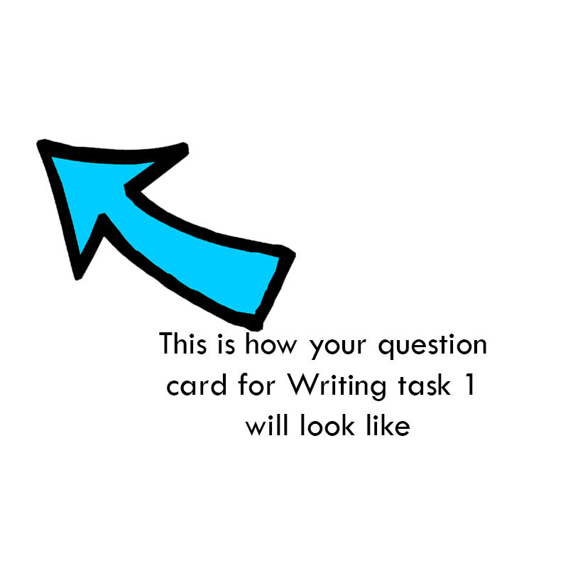

IELTS Writing
On this page you can find all the information about IELTS Writing, see IELTS Writing topics, try useful IELTS Writing lessons and tips and see IELTS Writing samples.
Information about IELTS Writing
IELTS Writing test is made to assess your writing skills and techniques. There are two IELTS Writing modules: Academic and General. If you plan to study abroad, then you should take IELTS Academic module. And if you wish to work abroad, then you should take IELTS General module.
| Time | 60 minutes |
| Sections | 2 |
IELTS Writing test lasts 1 hour and consists of 2 parts: task 1 and task 2. Writing task 1 is different for Academic and General IELTS, but Writing task 2 is the same for both modules.
In Academic Writing task 1 you're asked to describe a graph, chart or diagram. And in General Writing task 1 you have to write a letter to someone. In Writing task 2 you have to write an essay on a given topic.
IELTS Academic Writing
IELTS Academic Writing module lasts 60 minutes and has 2 tasks, which must both be completed. Although it is recommended to spend approximately 20 minutes on task 1 and about 40 minutes on task 2, you can divide your time between two sections the way you prefer.
See which skills are tested in IELTS Writing Academic.
| № | Task | Words minimum | Recommended time |
| Task 1 | Describe a graph, table, chart or diagram | 150 words | 20 minutes |
| Task 2 | Write an essay giving your opinion and justifying it | 250 words | 40 minutes |
Academic IELTS Writing Task 1
In this task you need to describe or summarize visualised data, such as graph, chart, table, diagram, process or scheme. You should write at least 150 words in this task.
IELTS Writing Task 1 sample (Academic):
You should spend about 20 minutes on this task.
The graph below shows tourism statistics among Venezuelian students from 2011 to 2014. Summarize the information by selecting and reporting the main features and make comparisons where relevant.
Write at least 150 words.
IELTS Writing Task 2
This task is the same for Academic and General modules.
This is more challenging task. You should write an essay on a given topic, presenting your point of view and supporting it with relevant arguments. You should write at least 250 words in this task.
IELTS Writing Task 2 sample:
You should spend about 40 minutes on this task.
Write about the following topic:
Does Internet need to be controlled by the government?
Justify your answer.
Write at least 250 words.
See IELTS Writing Marking Scheme
IELTS General Writing
| № | Task | Words minimum | Recommended time |
| Task 1 | Write a letter on a given topic | 150 words | 20 minutes |
| Task 2 | Write an essay giving your opinion and justifying it | 250 words | 40 minutes |
IELTS General Writing module lasts 60 minutes and has 2 tasks, which must both be completed. Although it is recommended to spend approximately 20 minutes on task 1 and about 40 minutes on task 2, you can divide your time between two sections the way you prefer.
See which skills are tested in IELTS Writing General.
IELTS General Writing Task 1
In this task you are asked to write a letter concerning everyday situation that you are likely to encounter while living in an English-speaking environment. For example, a letter to an accommodation officer, your employer or a friend. The letter may be personal, semi-formal or formal.
You are tested on your ability to:
- write personal correspondence
- provide general factual information
- express your opinions: views, needs, wants, likes and dislikes etc.
IELTS General Writing Task 1 sample:
You should spend about 20 minutes on this task.
Your friend is celebrating her Birthday soon and has invited you to a party. But you are unable to come because you are going to attend an important meeting that day.
Write a letter to your friend and
- thank her for the invitation;
- explain why you cannot come;
- propose to meet on other day;
Write at least 150 words.
You do NOT need to write your own address. Begin your letter as follows:
Dear Mary,